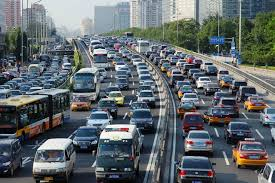

Air Pollution Caused By Transportation In Yangon
Air pollution is the contamination of the indoor or outdoor environment by harmful physical, chemical, or biological agents. It occurs when gases, dust, smoke, or toxic particles enter the atmosphere, making the air unsafe or reducing its overall quality.

Transportation pollution
The main reasons that contribute to the rise in air pollution in Yangon are increasing vehicle traffic, industrial emissions, trash burning, reliance on diesel generators (especially during power outages), and coal‑based energy generation, together with urbanisation and a weak regulatory framework¹.
According to the Greenpeace report (2019)2, six out of 14 monitored towns in Myanmar exceeded the World Health Organisation guideline for annual average PM₁₀ levels, and none met the standard. Air pollution imposes tangible burdens on people’s lives. With air pollution, fine particulate matter (PM₂.₅) and other airborne toxins seep into lungs, bloodstream and can trigger chronic diseases and complications.